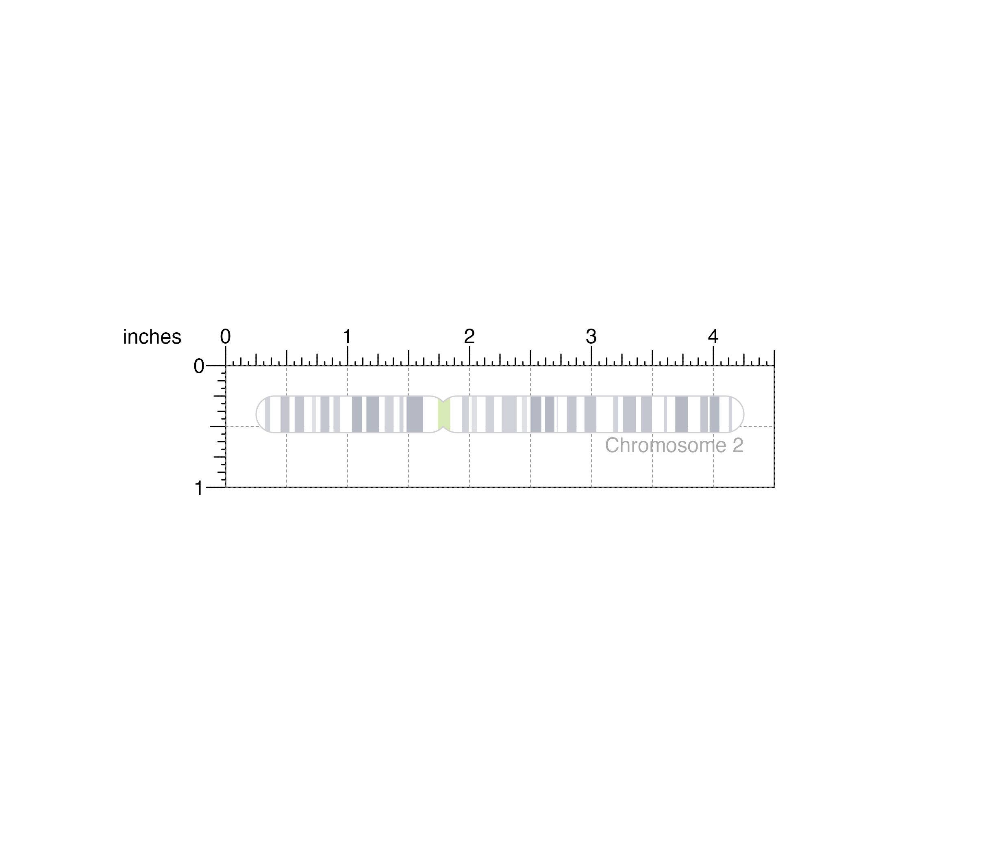

Plot a chromosome ideogram with or without cytobands
plotIdeogram( chrom, assembly = "hg38", data = NULL, orientation = "h", showBands = TRUE, x = NULL, y = NULL, width = NULL, height = NULL, just = c("left", "top"), default.units = "inches", draw = TRUE, params = NULL )
| chrom | Chromosome to be plotted, as a string. |
|---|---|
| assembly | Default genome assembly as a string or a
assembly object.
Default value is |
| data | Custom cytoband data, as a dataframe with the following columns: "seqnames", "start", "end", "width", "strand", "name", "gieStain". |
| orientation | Character value indicating the orientation
of the ideogram. Default value is
|
| showBands | Logical value indicating whether to draw
colored cytobands within ideogram.
Default value is |
| x | A numeric or unit object specifying ideogram x-location. |
| y | A numeric, unit object, or character containing a "b" combined with a numeric value specifying ideogram y-location. The character value will place the ideogram y relative to the bottom of the most recently plotted plot according to the units of the plotgardener page. |
| width | A numeric or unit object specifying ideogram width. |
| height | A numeric or unit object specifying ideogram height. |
| just | Justification of ideogram relative to its (x, y) location.
If there are two values, the first value specifies horizontal justification
and the second value specifies vertical justification.
Possible string values are: |
| default.units | A string indicating the default units to use if
|
| draw | A logical value indicating whether graphics output should be
produced. Default value is |
| params | An optional pgParams object containing relevant function parameters. |
Returns a ideogram object containing relevant
genomic region, placement, and grob information.
An ideogram can be placed on a plotgardener coordinate page by providing plot placement parameters:
plotIdeogram(chrom, x, y, width, height, just = c("left", "top"), default.units = "inches")
This function can also be used to quickly plot an unannotated ideogram by ignoring plot placement parameters:
plotIdeogram(chrom)
If no data is provided, Giemsa stain band data will first try to fetch UCSC with AnnotationHub. The results are cached for faster access, but these cached items can be deleted. If no internet connection is available and AnnotationHub has not previously cached the data, custom Giemsa stain band data can be loaded with the `data` parameter.
## Load Giemsa stain band information and genomic ## annotation data for hg19 genome assembly library(TxDb.Hsapiens.UCSC.hg19.knownGene) library(AnnotationHub)#>#>#> #>#> #> #>#> #> #>## Plot and place ideogram ideogramPlot <- plotIdeogram( chrom = "chr2", assembly = "hg19", x = 0.25, y = 0.25, width = 4, height = 0.3, just = c("left", "top"), default.units = "inches" )#>## Plot text plotText( label = "Chromosome 2", fontcolor = "dark grey", x = 4.25, y = 0.65, just = "right" )#>